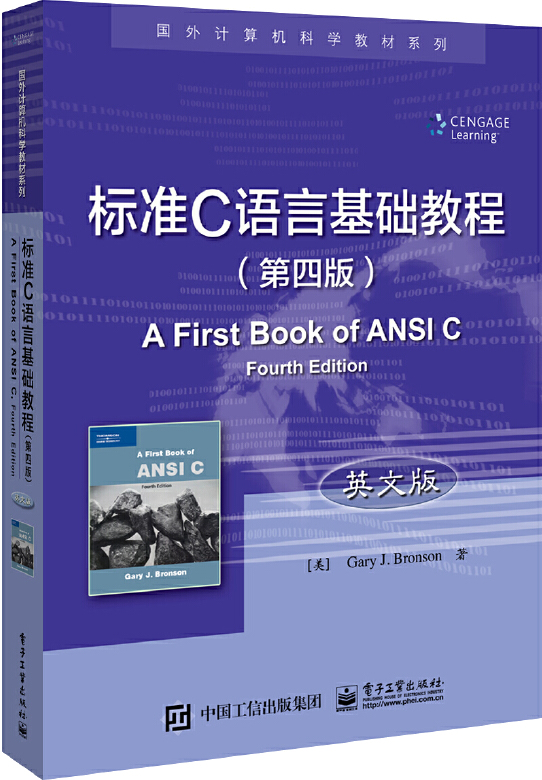

首页 > 书籍下载
《标准C语言基础教程(第四版)》英文版PDF下载（高清完整版）
|  | 作者：[美]Gary J.Bronson（盖瑞 J.布朗森） |
| 语言：英文 | |
| 出版时间：2018年06月01日 | |
| 出版社：电子工业出版社 | |
| 书号ISBN：9787121343261 | |
| 总页数：548 |
这是一本英文版的 C 语言书籍，内容全面，几乎涵盖了 C 语言所有的知识点，书籍末尾还专门用一章引出面向对象的 C++ 语言，适合英语基础好、对 C/C++ 感兴趣的读者。
这里提供的是《标准C语言基础教程(第四版)》英文版的高清 PDF 下载，内容完整，附带目录标签。
这本书充分考虑到了初学者的学习感受，对 C 语言中最大的指针部分做了简单易懂的讲解。此外，书中各个章节都配有大量的简答题和编程题，帮助初学者快速掌握 C 语言，并能够用 C 语言解决一些实际的问题。
再次强调，这是一本英文版的 C 语言书籍，英文基础薄弱的 C 语言初学者，不建议看这本书。
书籍目录
- 第1章 计算机编程导论 2
- 1.1 历史和硬件 2
- 1.2 编程语言 8
- 1.3 算法 13
- 1.4 软件开发过程 17
- 1.5 案例研究:设计与开发 24
- 1.6 编程错误 28
- 1.7 小结 28
- 1.8 补充材料:数字存储码 29
- 第2章 C 语言编程初步 31
- 2.1 C 语言编程简介 31
- 2.2 编程风格 40
- 2.3 数据类型 43
- 2.4 算术运算 49
- 2.5 变量和声明 58
- 2.6 案例研究:温度转换 66
- 2.7 编程错误和编译器错误 70
- 2.8 小结 72
- 2.9 补充材料:内存分配 73
- 第3章 数据处理与交互式输入 79
- 3.1 赋值 79
- 3.2 数学库函数 88
- 3.3 交互式输入 92
- 3.4 格式化输出 102
- 3.5 符号常量 110
- 3.6 案例研究:交互式输入 112
- 3.7 编程错误和编译器错误 117
- 3.8 小结 119
- 3.9 补充材料:抽象简介 120
- 第4章 选择 124
- 4.1 关系表达式 124
- 4.2 if 语句和if else 语句 129
- 4.3 if else 链 139
- 4.4 switch 语句 146
- 4.5 案例研究:数据验证 152
- 4.6 编程错误和编译器错误 156
- 4.7 小结 158
- 4.8 补充材料:错误, 测试和调试 160
- 第5章 循环 165
- 5.1 基本的循环结构 165
- 5.2 while 语句 167
- 5.3 利用while 循环求和及平均值 174
- 5.4 for 语句 184
- 5.5 案例研究:循环编程技术 192
- 5.6 嵌套循环 199
- 5.7 do while 语句 202
- 5.8 编程错误和编译器错误 205
- 5.9 小结 206
- 第6章 函数模块性(1) 209
- 6.1 函数声明与参数声明 209
- 6.2 返回值 221
- 6.3 案例研究:计算年龄标准 229
- 6.4 标准库函数 238
- 6.5 编程错误和编译器错误 250
- 6.6 小结 251
- 第7章 函数模块性(2) 252
- 7.1 变量的作用域 253
- 7.2 变量存储类 258
- 7.3 按引用传递 264
- 7.4 案例研究:交换值 275
- 7.5 递归 281
- 7.6 编程错误和编译器错误 286
- 7.7 小结 287
- 第8章 数组 290
- 8.1 一维数组 290
- 8.2 数组初始化 298
- 8.3 数组作为函数实参 302
- 8.4 案例研究:计算平均值和标准差 307
- 8.5 二维数组 312
- 8.6 编程错误和编译器错误 320
- 8.7 小结 321
- 8.8 补充材料:查找和排序方法 322
- 第9章 字符串 342
- 9.1 字符串基础 342
- 9.2 库函数 352
- 9.3 输入数据验证 358
- 9.4 格式化字符串 364
- 9.5 案例研究:字符和单词计数 367
- 9.6 编程错误和编译器错误 372
- 9.7 小结 373
- 第10章 数据文件 375
- 10.1 声明, 打开和关闭文件流 375
- 10.2 读取和写入文本文件 385
- 10.3 随机文件访问 393
- 10.4 传递和返回文件名 396
- 10.5 案例研究:创建和使用常量表 399
- 10.6 写入和读取二进制文件 408
- 10.7 编程错误和编译器错误 412
- 10.8 小结 413
- 10.9 补充材料:控制码 414
- 第11章 数组, 地址和指针 418
- 11.1 数组名称作为指针 418
- 11.2 指针操作 423
- 11.3 传递和使用数组地址 428
- 11.4 使用指针处理字符串 435
- 11.5 使用指针创建字符串 439
- 11.6 编程错误和编译器错误 444
- 11.7 小结 446
- 第12章 结构 447
- 12.1 单一结构 447
- 12.2 结构数组 452
- 12.3 传递结构和返回结构 456
- 12.4 联合 463
- 12.5 编程错误和编译器错误 465
- 12.6 小结 466
- 第13章 动态数据结构 467
- 13.1 链表简介 467
- 13.2 动态内存分配 474
- 13.3 栈 479
- 13.4 队列 485
- 13.5 动态链表 491
- 13.6 编程错误和编译器错误 497
- 13.7 小结 499
- 第14章 其他功能 501
- 14.1 新增的特性 501
- 14.2 按位运算 506
- 14.3 宏 513
- 14.4 命令行参数 515
- 14.5 编程错误和编译器错误 519
- 14.6 小结 520
- 第15章 C++简介 521
- 15.1 C++中的过程化编程 521
- 15.2 面向对象的C++ 526
- 15.3 编程错误和编译器错误 527
- 15.4 小结 528
- 附录
- 附录A 运算符优先级表 530
- 附录B ASCII 字符码 531
- 附录C 标准C 语言库 534
- 附录D 输入, 输出和标准错误重定向 538
- 附录E 浮点数存储 540
- 附录F 创建个人函数库 542
- 附录G 简答题答案 543
书籍下载
一键登录，免费下载完整版 PDF，文件名称：《标准C语言基础教程(第四版)》英文版.pdf